行旅剑士
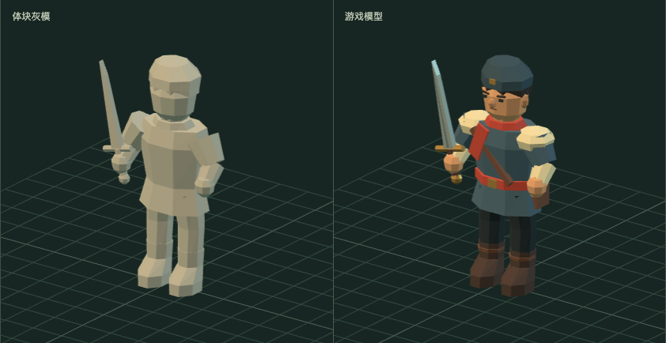
1516 三角面 · 841 × 434 · 复现此视图
17 张固定镜头 · 查看模型指纹、事件与复拍参数

1516 三角面 · 841 × 434 · 复现此视图
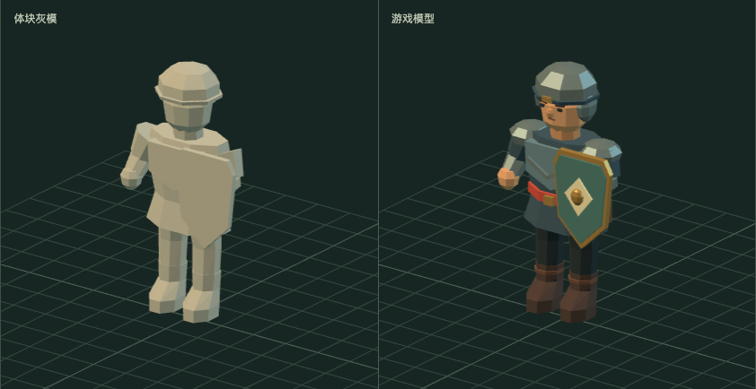
1676 三角面 · 841 × 434 · 复现此视图
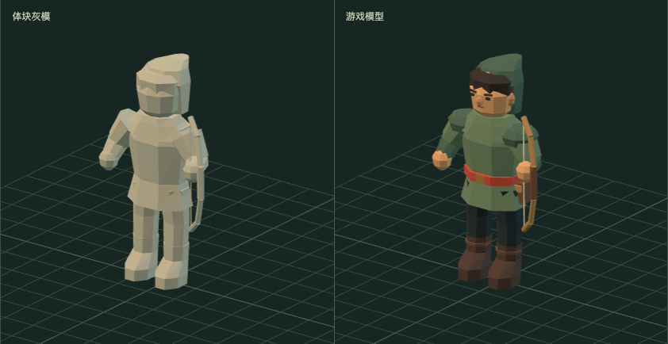
1722 三角面 · 841 × 434 · 复现此视图
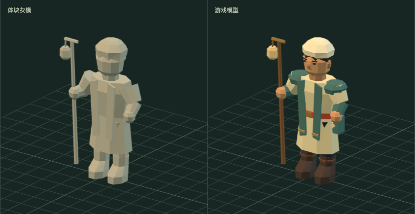
1496 三角面 · 841 × 434 · 复现此视图
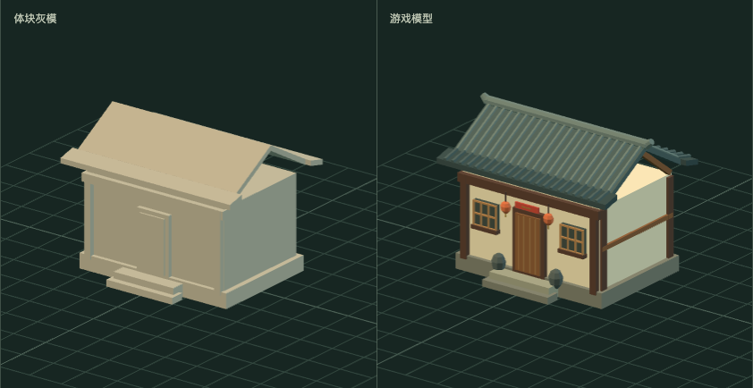
2432 三角面 · 841 × 434 · 复现此视图
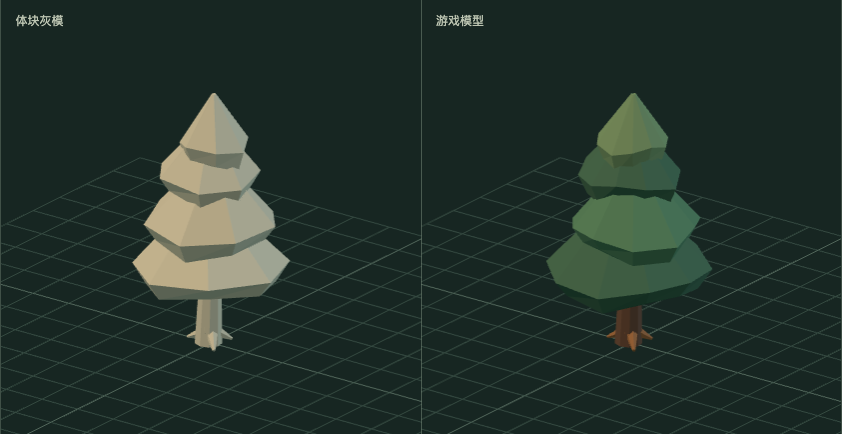
400 三角面 · 841 × 434 · 复现此视图
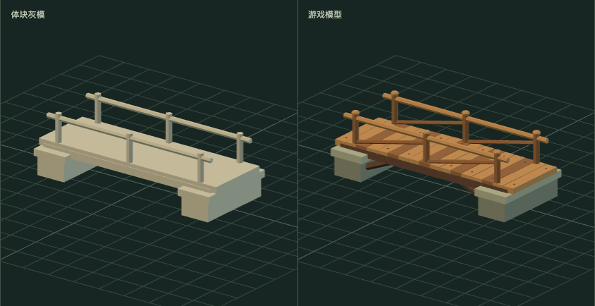
1380 三角面 · 841 × 434 · 复现此视图
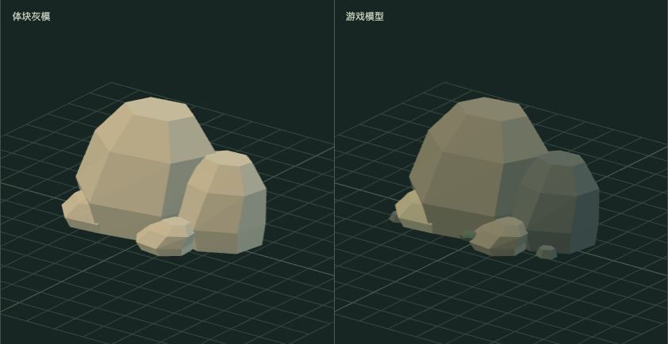
400 三角面 · 841 × 434 · 复现此视图
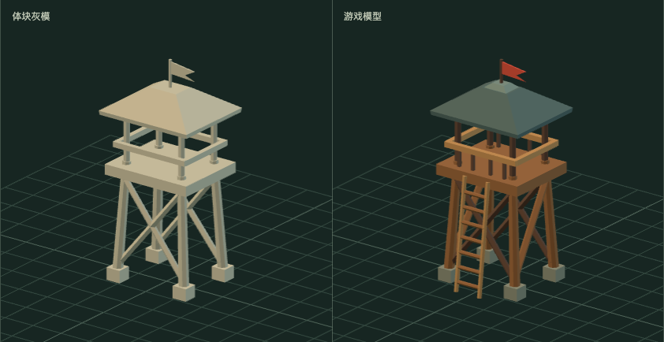
740 三角面 · 841 × 434 · 复现此视图
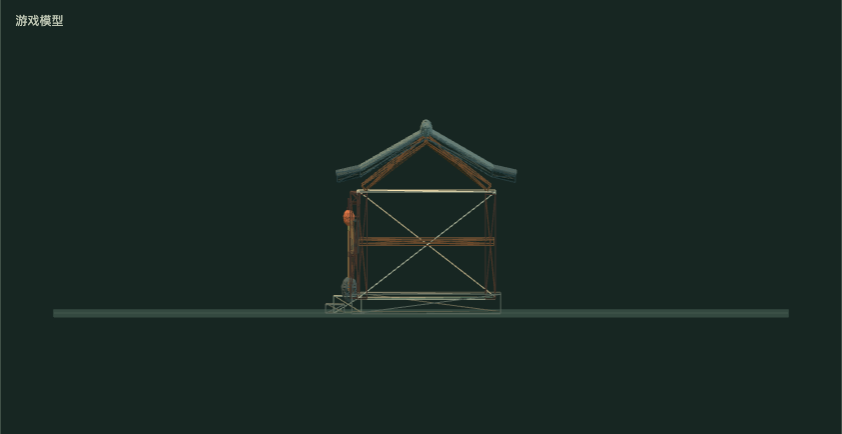
841 × 434 · 复现此视图
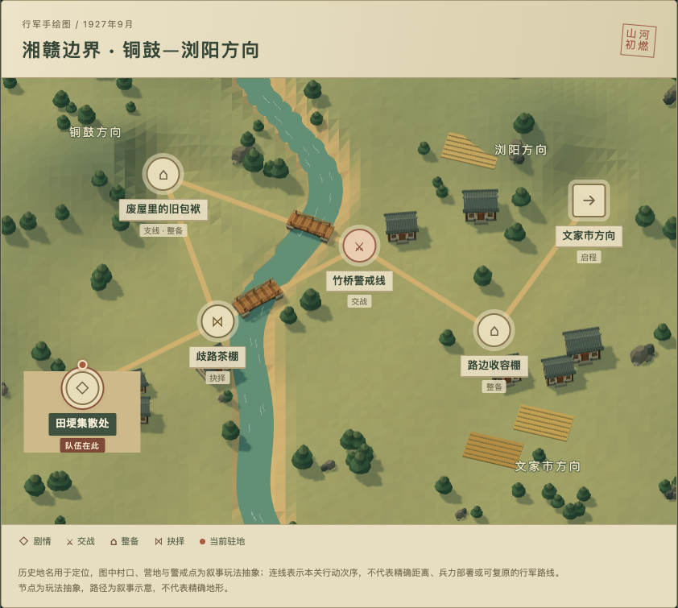
841 × 754 · 复现此视图
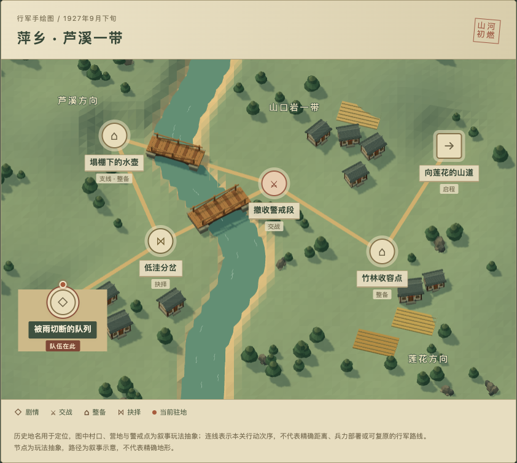
841 × 754 · 复现此视图
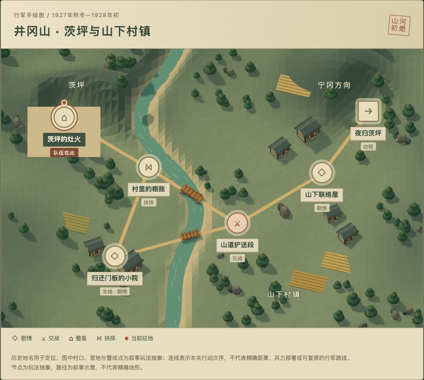
841 × 754 · 复现此视图
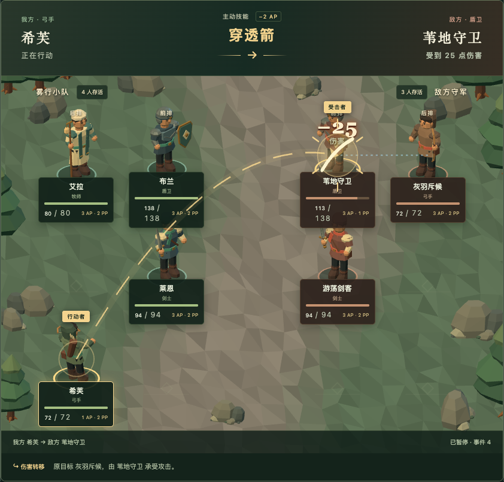
希芙 → 苇地守卫 · 穿透箭 −25 HP · 841 × 804 · 复现此视图
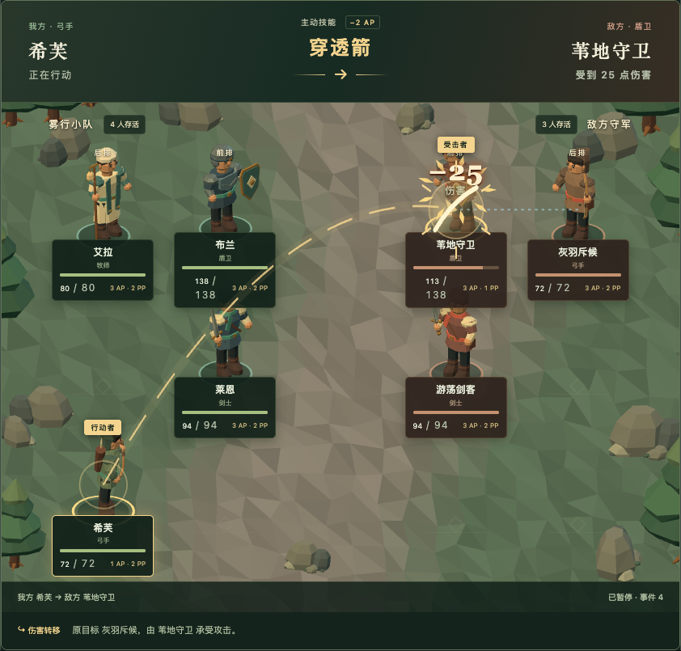
希芙 → 苇地守卫 · 穿透箭 −25 HP · 841 × 804 · 复现此视图
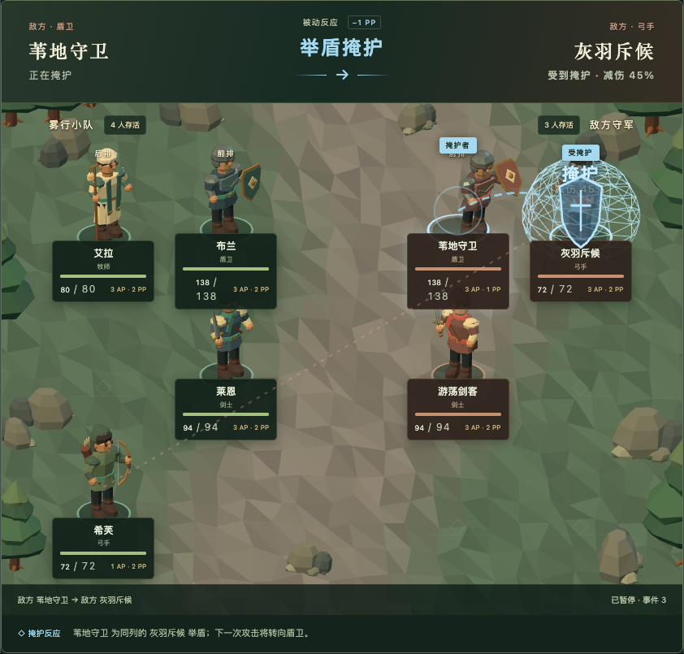
苇地守卫 · 举盾掩护同列后排，减伤 45% · 841 × 804 · 复现此视图
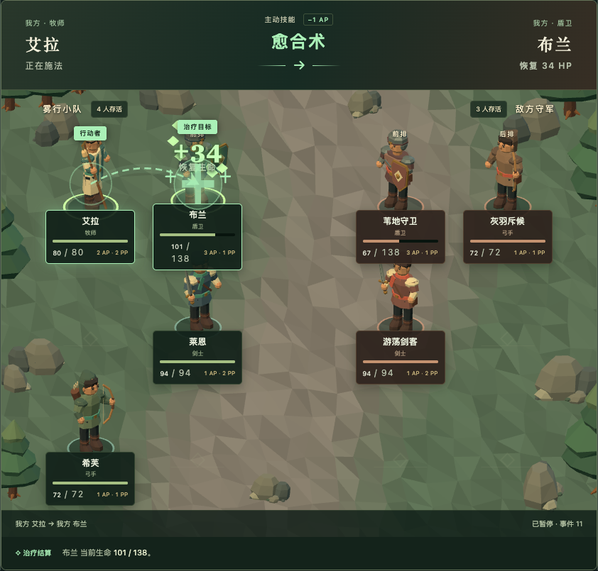
艾拉 → 布兰 · 愈合术 +34 HP · 841 × 804 · 复现此视图